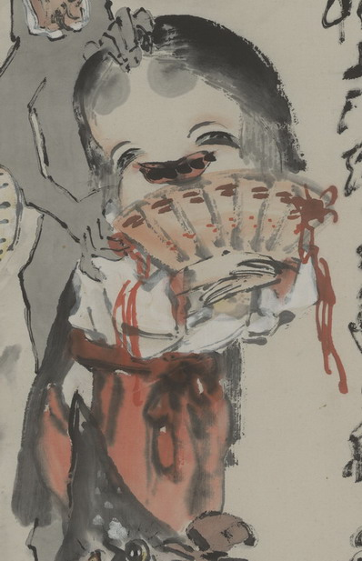

女官装束の化物。長い髪を垂らし、白い衣に、赤い袴をつけている。口を開けて、お歯黒にした歯を見せ、笑っている。開いた扇子を腕に抱えている。
出典：親書誌：U426_nichibunken_0149：〔舌切雀之図；シタキリスズメノズ〕／日付：2010／資源識別子：U426_nichibunken_0149_0004_0000
Copyright (c)2010- International Research Center for Japanese Studies, Kyoto, Japan. All rights reserved.